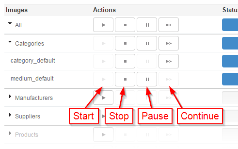

"Régénération avancée des miniatures" est un module qui permet de régénérer les miniatures si la méthode de PrestaShop ne fonctionne pas.
En utilisant l’AJAX, ce module ne surcharge pas le serveur en lui demande de calculer de nouveau toutes les images en même temps. En effet, ce module les calcule une par une, c'est plus long mais ça fonctionne tout le temps.
C'est la méthode la plus simple, mais elle peut ne pas fonctionner dans certains cas. Si cela ne fonctionne pas, utilisez la méthode d'installation manuelle présenté ci-dessous.
Dans l'onglet modules, cliquez sur ajouter un nouveau module.
Cliquez sur Parcourir pour ouvrir la boîte de dialogue qui vous permet de rechercher sur votre ordinateur, sélectionnez le fichier puis validez la boîte de dialogue. Enfin, cliquez sur Télécharger ce module.
Le module apparaîtra alors dans votre liste des modules sous l'onglet Module.
Cliquez sur le bouton Installer pour installer le module.
Utilisez cette méthode si l'installation manuelle ne fonctionne pas. Elle peut sembler fastidieuse, a priori, pour les débutants, parce qu'elle requiert un certain nombre de connaissances en FTP, etc., mais elle n'est pas plus complexe et peut-être même plus pratique car elle fonctionne à chaque fois.
En outre, le savoir-faire nécessaire à l'installation est assez basique et c'est quelque chose que tous les gestionnaires de boutique doivent maîtriser.
Pour installer manuellement un nouveau module de PrestaShop:

Si vous quittez la page de configuration pendant une régénération, le processus est stoppé mais vous pourrez le reprendre là où il en était plus tard.
Le module créé des fichiers temporaires pendant une régénération. Indiquez ici le dossier où ces fichiers peuvent être créés.
Si vous modifiez ce dossier alors qu'une régénération est commencé, l'avancement de celle-ci sera perdu.
Lorsque vous lancez la régénération de plusieurs types d'image à la fois, le module peut demander au serveur de traiter plusieurs demandes en même temps. Ceci permet d’accélérer la régénération mais peut surcharger le serveur.
Si vous constatez des erreurs 500 pendant une régénération, vous pouvez essayer de diminuer cette valeur.
Le module peut traiter une ou plusieurs images à chaque demande. Une valeur plus élevée permet d’accélérer la régénération globale mais ralentie le temps de traitement de chaque demande.
Si vous constatez des erreurs 500 ou de limite de temps dépassée (timeout) pendant une régénération, vous pouvez essayer de diminuer cette valeur.
Vous pouvez définir cette valeur pour chaque type d'image, ainsi une petite image prend moins de temps à traiter qu'une grande, vous pouvez donc demander au serveur d'en traiter plus à la fois.